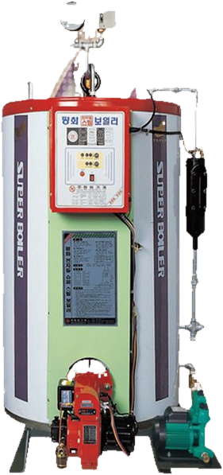
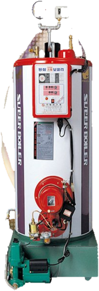
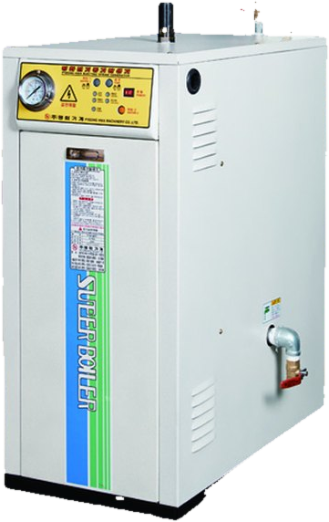
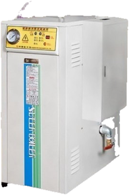
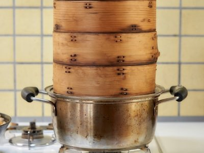
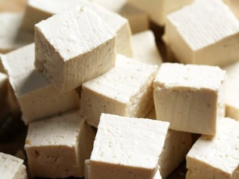
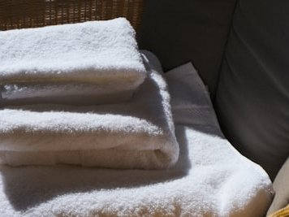
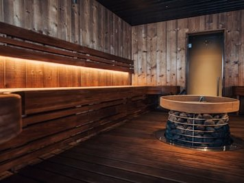
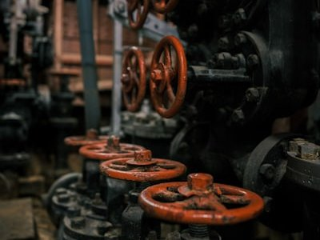
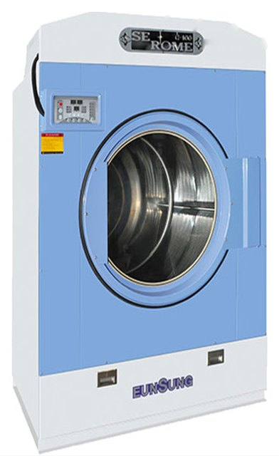

세탁소
스팀다리미, 프레스, 스팀식 건조기




스팀 사용량, 설치 장소, 들어오는 전기 용량에 따라 맞는 방식이 다릅니다. 현장을 보고 골라 드립니다.
평화기계 PHO 시리즈
등유·경유를 연료로 쓰는 관류식 스팀보일러입니다. 증발량을 누르면 모델별 사양을 볼 수 있습니다.
| 구분 | PHO-30 | PHO-50 | PHO-80 | PHO-100 | PHO-150 | PHO-200 | PHO-300 | PHO-500 | PHO-1000 | PHO-1500 |
|---|---|---|---|---|---|---|---|---|---|---|
| 정격 증발량 | 30 kg/h | 50 kg/h | 80 kg/h | 100 kg/h | 150 kg/h | 200 kg/h | 300 kg/h | 500 kg/h | 1,000 kg/h | 1,500 kg/h |
| 외형 (가로 × 세로 × 높이) | 620 × 800 × 1,420 mm | 660 × 840 × 1,570 mm | 800 × 900 × 1,700 mm | 800 × 900 × 1,700 mm | 1,050 × 1,320 × 7,700 mm | 1,200 × 1,450 × 1,800 mm | 1,350 × 1,500 × 1,900 mm | 1,300 × 1,700 × 2,500 mm | 1,400 × 2,000 × 2,500 mm | 1,800 × 2,300 × 2,600 mm |
| 최고 사용압력 | 3.5 kg/cm² | 3.5 kg/cm² | 3.5 또는 7 kg/cm² | 3.5 또는 7 kg/cm² | 3.5 또는 7 kg/cm² | 3.5 또는 7 kg/cm² | 3.5 또는 7 kg/cm² | 3.5 또는 7 kg/cm² | 10 kg/cm² | 10 kg/cm² |
| 열효율 | 85.1 % | 86 이상 % | 86 이상 % | 86 이상 % | 86 이상 % | 86 이상 % | 86 이상 % | 86 이상 % | 90 이상 % | 90 이상 % |
| 전열면적 | 1.3 m² | 1.7 m² | 3.1 m² | 3.5 m² | 4.2 m² | 4.5 m² | 4.5 m² | 4.7 m² | 9.5 m² | 9.6 m² |
| 사용 연료 | 등유 | 등유 | 등유 또는 경유 | 등유 또는 경유 | 등유 또는 경유 | 등유 또는 경유 | 등유 또는 경유 | 등유 또는 경유 | 등유 또는 경유 | 등유 또는 경유 |
| 연소 제어 | ON-OFF 자동 | ON-OFF 자동 | ON-OFF 자동 | ON-OFF 자동 | ON-OFF 자동 | ON-OFF 자동 | ON-OFF 자동 | ON-OFF 자동 | HI-LOW-OFF 자동 | HI-LOW-OFF 자동 |
| 노즐 용량 | 0.65 gal/h | 0.85 gal/h | 1.75 gal/h | 2 gal/h | 2.5 gal/h | 3.5 gal/h | 5 gal/h | 8 gal/h | - | - |
| 사용 전원 | 220V (60Hz) | 220V (60Hz) | 220 / 380V 삼상 (60Hz) | 220 / 380V 삼상 (60Hz) | 220 / 380V 삼상 (60Hz) | 220 / 380V 삼상 (60Hz) | 220 / 380V 삼상 (60Hz) | 220 / 380V 삼상 (60Hz) | 220 / 380V 삼상 (60Hz) | 220 / 380V 삼상 (60Hz) |
| 소비전력 | 130W | 130W | 150W | 150W | 150W | 250W | 250W | 450W | 7kW | 10kW |
| 제품 중량 | 125 kg | 150 kg | 290 kg | 310 kg | 530 kg | 720 kg | 860 kg | 1,300 kg | 1,700 kg | 2,000 kg |
| 접속구경 (증기 / 급수 / 퇴수 / 연도) | 15 / 15 / 15 / ø100 | 15 / 15 / 15 / ø100 | 20 / 15 / 20 / ø150 | 20 / 15 / 20 / ø150 | 22 / 15 / 25 / ø200 | 32 / 15 / 32 / ø200 | 32 / 15 / 32 / ø250 | 40 / 20 / 40 / ø250 | 50 / 32 / 50 / ø330 | 65 / 32 / 50 / ø360 |
제품 사양은 성능 개선을 위해 예고 없이 바뀔 수 있습니다. 200~500kg/h 모델 사진은 150kg/h 모델 사진으로 대신했습니다.
평화기계 PHE 시리즈
전기 히터로 스팀을 만드는 보일러입니다. 히터 용량(kW)을 누르면 모델별 사양을 볼 수 있습니다.
| 구분 | PHE-5 | PHE-10 | PHE-15 | PHE-20 | PHE-25 | PHE-30 | PHE-40 | PHE-50 | PHE-60 | PHE-70 | PHE-80 | PHE-90 | PHE-100 | PHE-120 | PHE-150 | PHE-200 | PHE-300 | PHE-400 | PHE-500 | PHE-600 | PHE-700 | PHE-1000 |
|---|---|---|---|---|---|---|---|---|---|---|---|---|---|---|---|---|---|---|---|---|---|---|
| 히터 용량 | 5 kW | 10 kW | 15 kW | 20 kW | 25 kW | 30 kW | 40 kW | 50 kW | 60 kW | 70 kW | 80 kW | 90 kW | 100 kW | 120 kW | 150 kW | 200 kW | 300 kW | 400 kW | 500 kW | 600 kW | 700 kW | 1,000 kW |
| 외형 (가로 × 세로 × 높이) | 500 × 690 × 780 mm | 500 × 790 × 820 mm | 500 × 790 × 820 mm | 500 × 790 × 820 mm | 500 × 790 × 975 mm | 500 × 790 × 975 mm | 500 × 790 × 975 mm | 500 × 790 × 975 mm | 500 × 790 × 975 mm | 700 × 930 × 1,240 mm | 770 × 910 × 1,240 mm | 770 × 910 × 1,240 mm | 770 × 910 × 1,240 mm | 1,000 × 1,140 × 1,540 mm | 1,600 × 1,000 × 1,550 mm | 1,600 × 1,000 × 1,550 mm | 1,800 × 1,000 × 1,750 mm | 1,800 × 1,000 × 1,750 mm | 1,800 × 1,100 × 1,750 mm | 1,800 × 1,100 × 1,750 mm | 1,800 × 1,100 × 1,750 mm | 1,800 × 1,500 × 1,750 mm |
| 최고 사용압력 | 5 또는 7 kg/cm² | 5 또는 7 kg/cm² | 5 또는 7 kg/cm² | 5 또는 7 kg/cm² | 5 또는 7 kg/cm² | 5 또는 7 kg/cm² | 5 또는 7 kg/cm² | 5 또는 7 kg/cm² | 5 또는 7 kg/cm² | 5 또는 7 kg/cm² | 3.5 또는 7 kg/cm² | 3.5 또는 7 kg/cm² | 3.5 또는 7 kg/cm² | 3.5 또는 7 kg/cm² | 7 kg/cm² | 7 kg/cm² | 7 kg/cm² | 7 kg/cm² | 7 kg/cm² | 7 kg/cm² | 7 kg/cm² | 7 kg/cm² |
| 열효율 | 98 % 이상 | 98 % 이상 | 98 % 이상 | 98 % 이상 | 98 % 이상 | 98 % 이상 | 98 % 이상 | 98 % 이상 | 98 % 이상 | 98 % 이상 | 98 % 이상 | 98 % 이상 | 98 % 이상 | 98 % 이상 | 98 % 이상 | 98 % 이상 | 98 % 이상 | 98 % 이상 | 98 % 이상 | 98 % 이상 | 98 % 이상 | 98 % 이상 |
| 사용 전원 | 220V 또는 380V 삼상 60Hz (선택) | 220V 또는 380V 삼상 60Hz (선택) | 220V 또는 380V 삼상 60Hz (선택) | 220V 또는 380V 삼상 60Hz (선택) | 220V 또는 380V 삼상 60Hz (선택) | 220V 또는 380V 삼상 60Hz (선택) | 220V 또는 380V 삼상 60Hz (선택) | 220V 또는 380V 삼상 60Hz (선택) | 220V 또는 380V 삼상 60Hz (선택) | 220V 또는 380V 삼상 60Hz (선택) | 220V 또는 380V 삼상 60Hz (선택) | 220V 또는 380V 삼상 60Hz (선택) | 220V 또는 380V 삼상 60Hz (선택) | 220V 또는 380V 삼상 60Hz (선택) | 220V 또는 380V 삼상 60Hz (선택) | 220V 또는 380V 삼상 60Hz (선택) | 220V 또는 380V 삼상 60Hz (선택) | 220V 또는 380V 삼상 60Hz (선택) | 380V 삼상 60Hz | 380V 삼상 60Hz | 380V 삼상 60Hz | 380V 삼상 60Hz |
| 전류 | 14 / 8 A (220V / 380V) | 27 / 16 A (220V / 380V) | 40 / 23 A (220V / 380V) | 53 / 31 A (220V / 380V) | 66 / 39 A (220V / 380V) | 79 / 48 A (220V / 380V) | 105 / 61 A (220V / 380V) | 132 / 77 A (220V / 380V) | 157 / 91 A (220V / 380V) | 173 / 106 A (220V / 380V) | 210 / 121 A (220V / 380V) | 236 / 136 A (220V / 380V) | 263 / 152 A (220V / 380V) | 314 / 182 A (220V / 380V) | 390 / 228 A (220V / 380V) | 525 / 304 A (220V / 380V) | 788 / 456 A (220V / 380V) | 1,050 / 608 A (220V / 380V) | 760 A | 912 A | 1,064 A | 1,521 A |
| 접속구경 (증기 / 급수 / 퇴수) | 15 / 15 / 15 A | 15 / 15 / 15 A | 15 / 15 / 15 A | 15 / 15 / 15 A | 15 / 15 / 15 A | 15 / 15 / 15 A | 15 / 15 / 15 A | 20 / 15 / 15 A | 20 / 15 / 15 A | 20 / 15 / 15 A | 20 / 15 / 32-15 A | 20 / 15 / 32-15 A | 20 / 15 / 32-15 A | 25 / 15 / 50-15 A | 25 / 20 / 50-32 A | 25 / 20 / 50-32 A | 32 / 20 / 50-32 A | 32 / 20 / 50-32 A | 32 / 20 / 50-32 A | 50 / 32 / 50-32 A | 50 / 32 / 50-32 A | 50 / 32 / 50-32 A |
제품 사양은 성능 개선을 위해 예고 없이 바뀔 수 있습니다.
스팀다리미, 프레스, 스팀식 건조기

떡 찌기, 시루와 찜기

콩물 끓이기

세탁물 건조와 다림질

스팀 사우나, 온수
스팀량과 공간에 맞는 용량을 골라 설치합니다.
오래된 보일러를 새 보일러로 바꿔 드립니다.
안전장치와 소모품을 정기적으로 확인합니다.
멈춘 보일러를 빠르게 고칩니다.
닳은 부품을 맞는 부품으로 교체합니다.
보일러에서 설비까지 배관을 연결합니다.


은성 스팀식 건조기와 평화기계 보일러를 함께 설치하면 보일러 하나로 건조기와 스팀다리미를 같이 씁니다. 두 장비를 한 업체가 관리하니 고장이 나도 원인을 빨리 찾습니다.
업종과 규모만 말씀해 주시면 맞는 장비와 견적을 안내해 드립니다.
평일 09:00 – 17:00 (주말·공휴일 휴무)